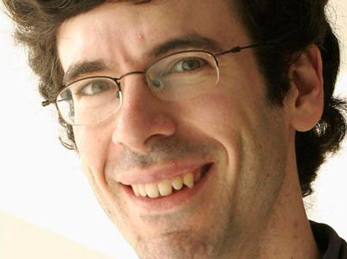
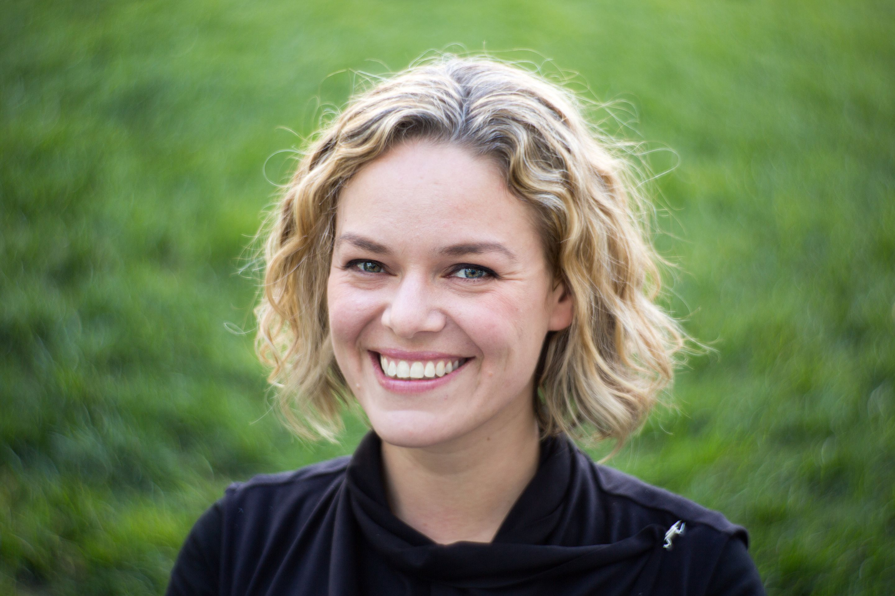
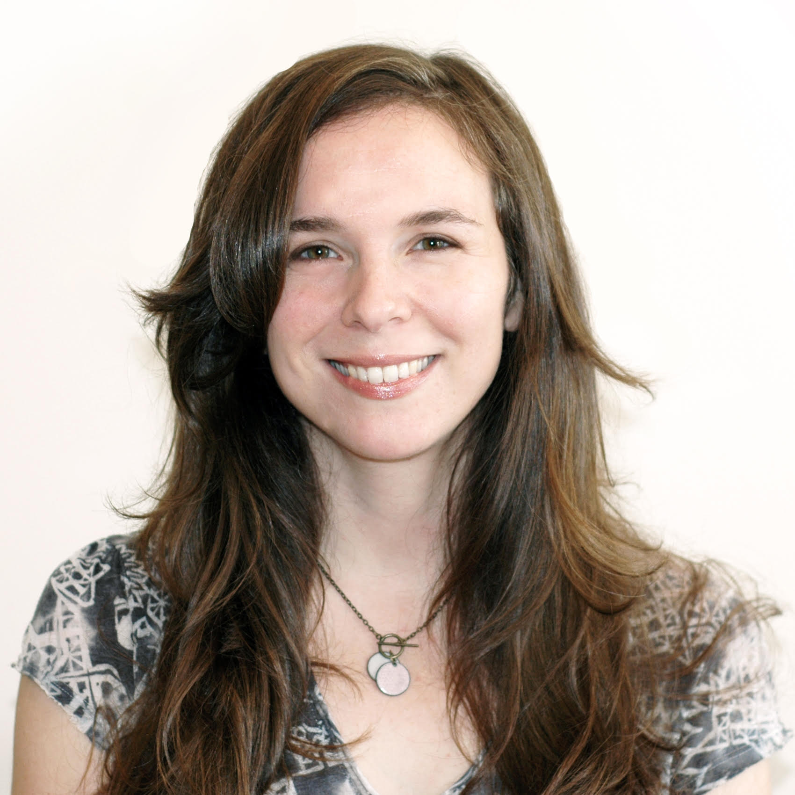
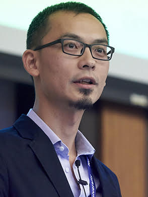
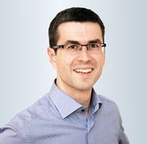

- May 1, 2018: Speaker slides linked from this page (see respective talk abstracts below).
- Apr. 25, 2018: The workshop was a big success. Thanks to all participants, speakers, and poster presenters!
- Apr. 14, 2018: List of accepted papers announced.
- Apr. 5, 2018: Keynote titles and abstracts announced.
- Mar. 13, 2018: Workshop schedule announced.
- Jan. 31, 2018: Cong Yu confirmed as invited speaker.
- Jan. 11, 2018: Andrea Forte confirmed as invited speaker.
- Jan. 10, 2018: Katherine Maher (Wikimedia Executive Director) confirmed as invited speaker.
- Dec. 12, 2017: Gerhard Weikum confirmed as invited speaker.
- Dec. 11, 2017: Markus Krötzsch confirmed as invited speaker.
- Dec. 6, 2017: Jon Kleinberg confirmed as invited speaker.
- Dec. 6, 2017: Wiki Workshop 2018 webpage online.
This schedule is tentative and subject to change.
| 9:00 - 9:20 | Welcome and "Hello my name is" |
| 9:20 - 10:00 | Invited talk: Gerhard Weikum |
| 10:00 - 10:40 | Invited talk: Andrea Forte |
| 10:40 - 11:00 | Coffee break |
| 11:00 - 11:45 | Invited talk: Jon Kleinberg |
| 11:45 - 12:15 | Poster spotlight presentations |
| 12:15 - 12:20 | Poster setup |
| 12:20 - 13:50 | Lunch and poster session |
| 13:50 - 14:35 | Invited talk: Markus Krötzsch |
| 14:35 - 15:20 | Invited talk: Cong Yu |
| 15:20 - 15:40 | Coffee break |
| 15:40 - 16:25 | Invited talk: Katherine Maher |
| 16:25 - 17:00 | Open discussion and closing remarks |

Long-Range Planning and Behavioral Biases: A Computational Approach
Long-range planning is an integral part of the creation of on-line content, where for example people work toward reputational milestones, build up to administrative roles, or complete complex projects. To understand these kinds of processes, we need to enrich our models with the types of human behavioral biases that come into play when people attempt to reach long-range goals --- particularly, the tendency toward present bias, in which costs and benefits incurred in the present receive particular weight. We develop a network model for the process of planning with present bias, and show how this model directly produces a wide range of qualitative phenomena observed in the literature on present-biased behavior, including procrastination, abandonment of long-range tasks, and the benefits of reduced sets of choices. We then show how this model can naturally incorporate other behavioral phenomena, including sophistication in planning, and the interaction of present bias with sunk-cost bias. (This talk is based on joint work with Sigal Oren and Manish Raghavan.)
[slides]
Jon is a professor at Cornell University. His research focuses on issues at the interface of networks and information, with an emphasis on the social and information networks that underpin the Web and other on-line media. His work has been supported by an NSF Career Award, an ONR Young Investigator Award, a MacArthur Foundation Fellowship, a Packard Foundation Fellowship, a Simons Investigator Award, a Sloan Foundation Fellowship, and grants from Facebook, Google, Yahoo!, the ARO, and the NSF. He is a member of the National Academy of Sciences, the National Academy of Engineering, and the American Academy of Arts and Sciences.
Katherine Maher (Executive Director, Wikimedia Foundation)

Katherine is the Executive Director of the Wikimedia Foundation, the nonprofit organization that supports Wikipedia and free knowledge for all. She is a longtime advocate for free and open societies, and an expert in leveraging technology for social impact. Katherine was appointed Executive Director in July 2016, after serving as the organization’s first Chief Communications Officer. She has lived and worked around the world, leading the introduction of technology and innovation in human rights, good governance, and international development. She was a founding member of the UNICEF Innovation team, where she helped introduce open source innovation for health and child welfare. She has worked with the National Democratic Institute, the World Bank, and Access Now on programs supporting open technologies for democratic participation, civic engagement, youth entrepreneurship, open government, and human rights. Katherine is a member of the World Economic Forum’s Global Council on Human Rights, a fellow at the Truman National Security Project, a member of the advisory board of the Open Technology Fund and a trustee of the Project for the Study of the 21st Century. She lives in San Francisco.
Gerhard Weikum (Max Planck Institute for Informatics, Saarbrücken)

Beyond Knowledge Graphs
Large knowledge graphs have become a powerful asset for search, analytics, recommendations and data integration, with intensive use at big industrial stakeholders. They have focused on encyclopedic facts about entities such as people, places and products. However, they lack various other dimensions of knowledge. For advanced search, conversational bots, visual understanding and next-generation AI, computers need to be equipped with broader kinds of knowledge: quantitative modifiers of facts, plausibility invariants, properties of everyday objects, human activities and spatio-temporal as well as socio-cultural context. This talk discusses these new frontiers for machine knowledge.
[slides]
Gerhard is a Research Director at the Max Planck Institute for Informatics (MPII) in Saarbrücken, Germany, where he is leading the department on databases and information systems. He is also an adjunct professor in the Department of Computer Science of Saarland University in Saarbrücken, Germany, and he is a principal investigator of the Cluster of Excellence on Multimodal Computing and Interaction. Gerhard's research col-s transactional and distributed systems, self-tuning database systems, data and text integration, and the automatic construction of knowledge bases. He co-authored a comprehensive textbook on transactional systems, received the VLDB 10-Year Award for his work on automatic DB tuning, and is one of the creators of the YAGO knowledge base.

Participatory Information Spaces: Designing Smarter Societies
When someone uses bad information, it’s often because the tools they used to find that information were not designed to help them make good judgements. The need for an integrated design response to the problem of information assessment is critical in an age of participatory information sources like wikis. Technologies can be designed to support human needs in different ways; for example, they can be designed using principles of usability, accessibility, or ergonomics. However, design sciences currently lack a shared vocabulary for talking about “assessability” — those properties of designed spaces that allow people to assess information they find. Assessable designs don’t just deliver assessments of information quality, they support people in getting
better at judging the information they encounter online. In this talk I’ll discuss experiments with assessable designs as well as introduce a nascent research agenda on privacy and anonymity in open collaboration projects.
[slides]
Andrea is an associate professor at Drexel University College of Computing and Informatics. She directs the Drexel Social Computing group, where her team studies and designs technologies that help people make cool things, share information, and learn together. She's particularly interested in new literacies that are required for successful participation in a technologically mediated society. Andrea holds a PhD in Human-Centered Computing from Georgia Tech and an NSF CAREER award in addition to numerous grants and awards related to human-centered computing, education, and privacy. She has been researching Wikipedia since 2004.
Cong Yu (Google Research, New York City)

Fighting Information Disorder with Open Standards, Structured Data, and AI
Fighting online disinformation and misinformation is a challenging task that requires collaboration between the journalists, the researchers, the platforms, and the standards communities. The ClaimReview structured data (http://schema.org/ClaimReview) is a successful example of such collaborations and it powers the various fact check features in Google and Bing. In the first part of the talk, I will describe the genesis of ClaimReview and the various fact check features Google has provided to users based on ClaimReview. I will then dive a bit deeper into our recent technical work on leveraging AI techniques to identify relevant documents for claims made within the fact-checking articles. I will describe the significant challenges that still remain in solving this association problem. In the second part of the talk, I will highlight several similarly collaborative projects including the Trust Project and the W3C Credible Web Community Group that aim to provide a variety of open standard credibility signals for news articles. I will conclude by looking at how the Wiki community can contribute collectively to address this important challenge of our society.
Cong is a Research Scientist at Google Research in New York City and manages the Structured Data research group. The group's mission is to leverage structured data on the Web to help users through Google products and has launched several impactful products and features such as Table Search and Structured Snippets. More recently, in collaboration with Jigsaw and Google News and Search, the group has been responsible for the Fact Checking effort at Google, which surfaces fact checking content from third-party publishers in Search and News to help Google users fight misinformation. His research interests are structured data exploration and mining, computational journalism and fact checking, applied machine learning, and scalable data analysis. Before Google, Cong was a Research Scientist at Yahoo! Research, also in NYC. He is a PhD graduate of University of Michigan, Ann Arbor.
Markus Krötzsch (Technische Universität Dresden)

Getting the most out of Wikidata
Wikidata, the knowledge base of Wikimedia, has been extremely successful in building and sustaining new communities of editors and users. Since its inception in 2012, it has developed from an experimental “data wiki” into a well-organised reference knowledge base with an amazing array of applications. You can now come across Wikidata content in your mobile phone, in newspaper articles, and even in aeroplanes. A key towards this success has been the development of a whole ecosystem of tools and APIs for accessing, querying, and analysing Wikidata content. The most prominent such feature is Wikidata's powerful query service, which is based on the Semantic Web data exchange standard RDF and its related query language SPARQL. The talk will give an overview over these developments and focus specifically on the possibilities and current usage of SPARQL on Wikidata.
[slides]
Markus is a full professor at the Faculty of Computer Science of the Technical University of Dresden, where he is holding the chair for Knowledge-Based Systems. He obtained his Ph.D. from the Institute of Applied Informatics and Formal Description Methods (AIFB) of Karlsruhe Institute of Technology (KIT) in 2010, and thereafter worked as a researcher and departmental lecturer at the Department of Computer Science of the University of Oxford until October 2013. From November 2013 till his appointment as a professor in July 2016, he was leading an Emmy Noether research group at TU Dresden. Markus has made important contributions to the development of Wikipedia's free knowledge base Wikidata, the highly efficient ELK reasoner for OWL EL, to the popular semantic content management system Semantic MediaWiki, and to the widely used W3C OWL 2 standard. His research has contributed to the fields of lightweight and rule-based ontology languages, query answering, reasoning complexity, and content management and integration platforms for the Web of Data.
Christoph Hube and Besnik Fetahu
Detecting Biased Statements in Wikipedia
[PDF]
Vevake Balaraman, Simon Razniewski and Werner Nutt
Recoin: Relative Completeness in Wikidata
[PDF]
Thomas Pellissier Tanon and Lucie-Aimée Kaffee
Property Label Stability in Wikidata
[PDF]
Laxmi Amulya Gundala and Francesca Spezzano
Readers' Demanded Hyperlink Prediction in Wikipedia
[PDF]
Tomás Sáez and Aidan Hogan
Automatically Generating Wikipedia Info-boxes from Wikidata
[PDF]
Lijun Lyu and Besnik Fetahu
Event-based News Suggestion in Real-Time for Wikipedia Pages from News Streams
[PDF]
Finn Årup Nielsen
Linking ImageNet WordNet Synsets with Wikidata
[PDF]
Sebastián Ferrada, Nicolás Bravo, Benjamin Bustos and Aidan Hogan
Querying Wikimedia Images using Wikidata Facts
[PDF]
Eva Zangerle and Claudia Müller-Birn
Recommendation-Assisted Data Curation for Wikidata
[PDF]
Mridul Seth, Jérôme Kunegis and Renaud Lambiotte
The Role of Cultural Importance in Sister City Relationships
[PDF]
Yerali Gandica
Population’s Preferences by Editing Wikipedia: 12 Worldwide Languages
[PDF]
Christian Torrero, Carlo Caprini and Daniele Miorandi
A Wikipedia-Based Approach to Profiling Activities on Social Media
[PDF]
John Samuel
Towards Understanding and Improving Multilingual Collaborative Ontology Development in Wikidata
[PDF]
Anwesha Chakraborty and Netha Hussain
Mapping and Bridging the Gender Gap: An Ethnographic Study of Indian Wikipedians and Their Motivations to Contribute
[PDF]
Navya Yarrabelly and Kamalakar Karlapalem
Estimating Credibility of News Authors from their WIKI Validated Predictions
[PDF]
Björn Ross, Marielle Dado, Maritta Heisel and Benjamin Cabrera
Gender Markers in Wikipedia Usernames
[PDF]
Tiziano Piccardi, Michele Catasta, Leila Zia and Robert West
Structuring Wikipedia Articles with Section Recommendations
Vsevolod Salnikov, Mridul Seth and Renaud Lambiotte
Mapping the Cultural Heritage of Cities
[PDF]
Célestin Coquidé, José Lages and Dima L. Shepelyansky
Importance and Interactions of World Universities from 24 Wikipedia Editions
Ramtin Yazdanian, Robert West and Leila Zia
The Elicitation of New Users’ Interests on Wikipedia
[PDF]
Gergely Odor, Emanuele Bugliarello and Robert West
How Did Wikipedia Become Navigable?
Workshop date: April 24, 2018
If authors want paper to appear in proceedings:
Submission deadline: January 28, 2018Author feedback: February 14, 2018Camera-ready version due: March 4, 2018
If authors do not want paper to appear in proceedings:
Submission deadline: March 11, 2018Author feedback: March 25, 2018
Note: If you need a visa to travel to France and your application for the visa depends on your workshop paper being accepted, we would advise you to submit your workshop paper by the January 28 deadline.
Wikipedia is one of the most popular sites on the Web, a main source of knowledge for
a large fraction of Internet users, and one of the very few projects that make not only their
content but also many activity logs available to the public. Furthermore, other Wikimedia projects,
such as Wikidata and Wikimedia Commons, have been created to share other types of
knowledge with the world for free. For a variety of reasons (quality and quantity of content,
reach in many languages, process of content production, availability of data, etc.) such projects
have become important objects of study for researchers across many subfields of the computational
and social sciences, such as social network analysis, artificial intelligence, linguistics,
natural language processing, social psychology, education, anthropology, political science,
human–computer interaction, and cognitive science.
The goal of this workshop
is to bring together researchers exploring all aspects of Wikimedia projects such as Wikipedia,
Wikidata, and Commons. With members of the Wikimedia Foundation's Research team on the
organizing committee and with the experience of successful
workshops in 2015, 2016, and 2017, we aim to continue facilitating a direct pathway for exchanging ideas between the organization that
coordinates Wikimedia projects and the researchers interested in studying them.
Topics of interest include, but are not limited to
- new technologies and initiatives to grow content, quality, diversity, and participation across Wikimedia projects
- use of bots, algorithms, and crowdsourcing strategies to curate, source, or verify content and structured data
- bias in content and gaps of knowledge
- diversity of Wikimedia editors and users
- detection of low-quality, promotional, or fake content, as well as fake accounts (e.g., sock puppets)
- questions related to community health (e.g., sentiment analysis, harassment detection)
- understanding editor motivations, engagement models, and incentives
- Wikimedia consumer motivations and their needs: readers, researchers, tool/API developers
- innovative uses of Wikipedia and other Wikimedia projects for AI and NLP applications
- consensus-finding and conflict resolution on editorial issues
- participation in discussions and their dynamics
- dynamics of content reuse across projects and the impact of policies and community norms on reuse
- privacy
- collaborative content creation (unstructured, semi-structured, or structured)
- innovative uses of Wikimedia projects' content and consumption patterns as sensors for real-world events, culture, etc.
- open-source research code, datasets, and tools to support research on Wikimedia contents and communities
Papers should be 1 to 8 pages long and will be published on the workshop webpage and optionally
(depending on the authors' choice) in the workshop proceedings.
Authors whose papers are accepted to the workshop will have the opportunity to participate in a poster session.
We explicitly encourage the submission of preliminary work in the form of extended abstracts (1 or 2 pages).
Papers should be 1 to 8 pages long. We explicitly encourage the submission of
preliminary work in the form of extended abstracts (1 or 2 pages). No need to anonymize your submissions.
For submission dates, see above.
- Michele Catasta, Stanford University
- Jérôme Hergueux, ETHZ
- Srijan Kumar, Stanford University
- Florian Lemmerich, RWTH Aachen University
- Jonathan Morgan, Wikimedia Foundation
- Tiziano Piccardi, EPFL
- Miriam Redi, Wikimedia Foundation
- Diego Saez-Trumper, Wikimedia Foundation
- Nithum Thain, Jigsaw
- Morten Warncke-Wang, University of Minnesota
Bob is an assistant professor of Computer Science at EPFL, where he heads the Data Science Lab. His research aims to understand, predict, and enhance human behavior in social and information networks by developing techniques in data science, data mining, network analysis, machine learning, and natural language processing. He holds a PhD in computer science from Stanford University.
Leila is a senior research scientist at the Wikimedia Foundation. Her current research interests are on understanding Wikipedia's readers, quantifying and addressing the gaps of knowledge in Wikipedia and Wikidata, and understanding and improving diversity in Wikipedia. She holds a PhD in management science and engineering from Stanford University.
Dario is a social computing researcher and the Wikimedia Foundation's Head of Research. His current interests focus on online collaboration, open science, and the measurement and discoverability of scientific knowledge. He holds a PhD in cognitive science from the École des Hautes Études en Sciences Sociales.
Jure is an associate professor of Computer Science at Stanford University. His research focuses on mining and modeling large social and information networks, their evolution, and diffusion of information and influence over them. Problems he investigates are motivated by large scale data, the Web and online media.